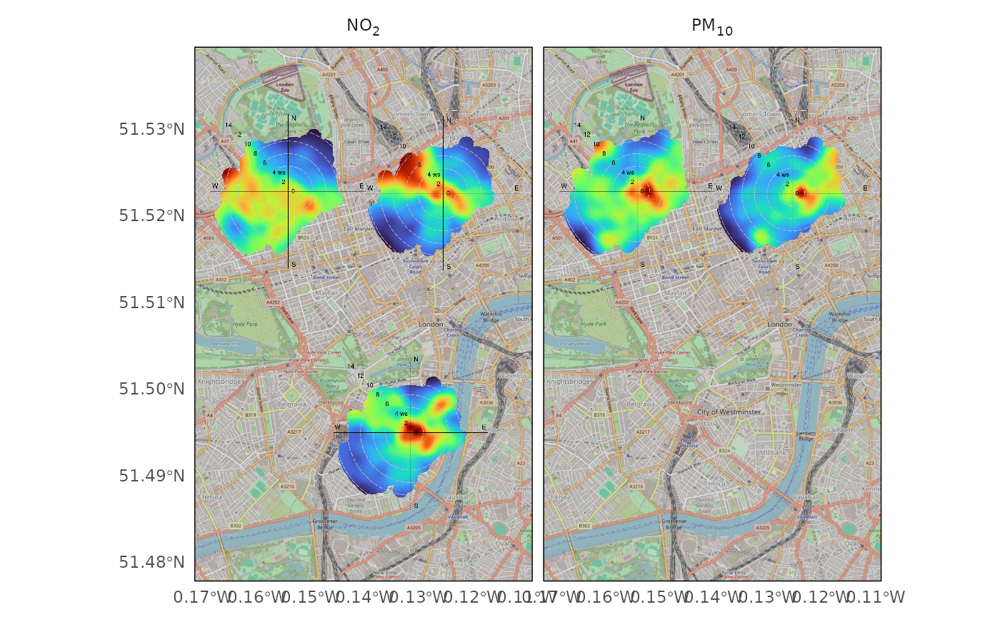

This vignette outlines some core functionality in openairmaps. For further examples, please see the online book.
Access UK Monitoring Data with Lat/Lng Information
openair::importUKAQ() has the meta argument
which appends the latitude and longitude of each site to the returned
data. If not using data from importUKAQ(), ensure that your
data has coordinate data appended in a similar way.
london_data <-
openair::importUKAQ(site = c("my1", "hors", "cll2"),
year = 2020,
meta = TRUE)
london_data
#> # A tibble: 26,352 × 22
#> source site code date nox no2 no o3 so2 pm10
#> <chr> <chr> <chr> <dttm> <dbl> <dbl> <dbl> <dbl> <dbl> <dbl>
#> 1 aurn London … CLL2 2020-01-01 00:00:00 61.9 40.0 14.3 1.33 1.21 44.9
#> 2 aurn London … CLL2 2020-01-01 01:00:00 62.3 37.9 15.9 1.60 1.73 48.5
#> 3 aurn London … CLL2 2020-01-01 02:00:00 68.7 37.2 20.5 2.00 1.23 49.1
#> 4 aurn London … CLL2 2020-01-01 03:00:00 60.2 36.5 15.5 2.05 1.23 53.1
#> 5 aurn London … CLL2 2020-01-01 04:00:00 34.9 28.2 4.32 7.58 1.23 46.3
#> 6 aurn London … CLL2 2020-01-01 05:00:00 32.4 27.7 3.06 7.33 0.844 43.7
#> 7 aurn London … CLL2 2020-01-01 06:00:00 35.8 29.9 3.84 6.64 1.23 46.1
#> 8 aurn London … CLL2 2020-01-01 07:00:00 46.3 36.2 6.60 4.29 1.23 42.7
#> 9 aurn London … CLL2 2020-01-01 08:00:00 116. 40.6 49.1 1.70 2.66 42.8
#> 10 aurn London … CLL2 2020-01-01 09:00:00 127. 41.6 55.5 2.05 3.18 42.1
#> # ℹ 26,342 more rows
#> # ℹ 12 more variables: pm2.5 <dbl>, v10 <dbl>, v2.5 <dbl>, nv10 <dbl>,
#> # nv2.5 <dbl>, ws <dbl>, wd <dbl>, air_temp <dbl>, co <dbl>, latitude <dbl>,
#> # longitude <dbl>, site_type <chr>
names(london_data)
#> [1] "source" "site" "code" "date" "nox" "no2"
#> [7] "no" "o3" "so2" "pm10" "pm2.5" "v10"
#> [13] "v2.5" "nv10" "nv2.5" "ws" "wd" "air_temp"
#> [19] "co" "latitude" "longitude" "site_type"To find sites to import data from, you can visualise UK monitoring
networks using networkMap(). Alternatively,
searchNetwork() will allow you to target a specific
region.
networkMap(source = c("aurn", "aqe"),
year = 2020,
control = "variable")Polar Plot Maps
The polarMap() family includes polarMap(),
annulusMap(), freqMap(),
percentileMap(), windroseMap(),
pollroseMap(), and diffMap(), and all work
similarly to create interactive air quality maps:
By setting static to TRUE you will receive
a static version of the map, which may be more useful for academic
articles.

Trajectory Maps
trajMap() has almost identical arguments to
openair::trajPlot(), and likewise
trajLevelMap() with openair::trajLevel().
trajMap(traj_data, colour = "pm10")
trajLevelMap(traj_data)